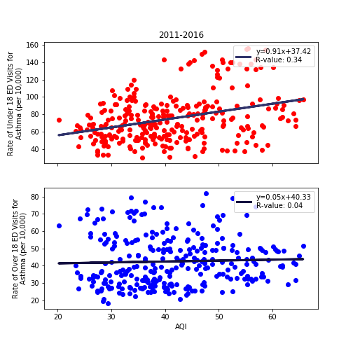
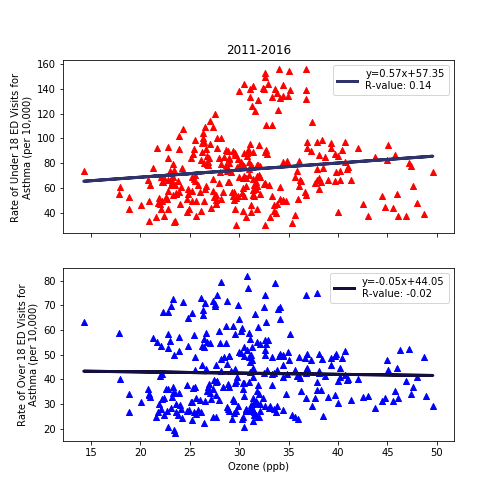
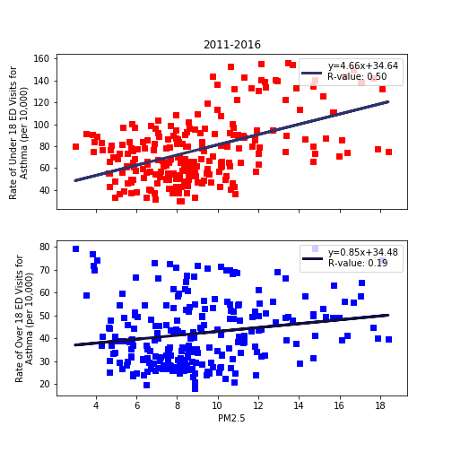

The purpose of the project was to see if there exists a correlation between air pollution and frequency of asthma.
Environmental data was acquired via the EPA API and emergency department visits for asthma in California data was acquired from the California Health and Human Services.
Atmospheric parameters
AQI - air quality index
Ozone - concentration of ground-level ozone (ppb)
PM2.5 - concentration of PM2.5
Analyses

Figure 1: The Air Quality Index (AQI) across the state of California (2011-2016) and asthma rates per 10,000 individuals admitted during this time. Red squares: less than 18yr | blue squares: greater than 18yr

Fig. 2. The ozone concentrations in ambient air across the state of California (2011-2016) and asthma rates per 10,000 individuals admitted during this time. Red triangles: less than 18yr | blue triangles: greater than 18yr

Figure 3: The PM2.5 concentrations in ambient air across the state of California (2011-2016) and asthma rates per 10,000 individuals admitted during this time. Red squares: less than 18yr | blue squares: greater than 18yr